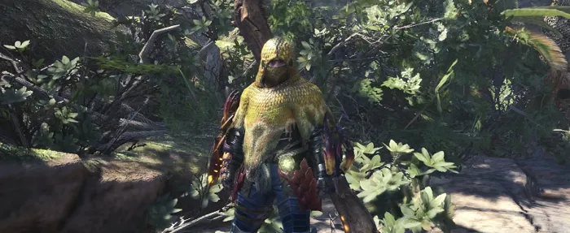
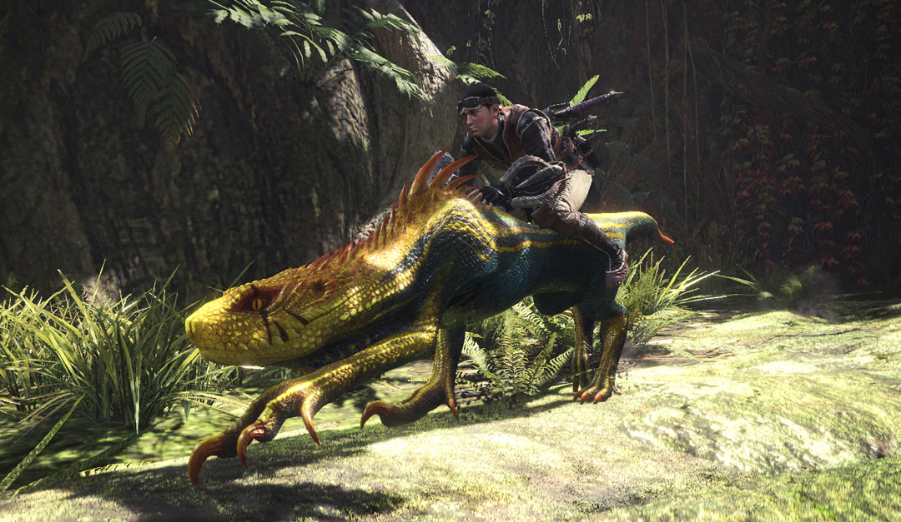
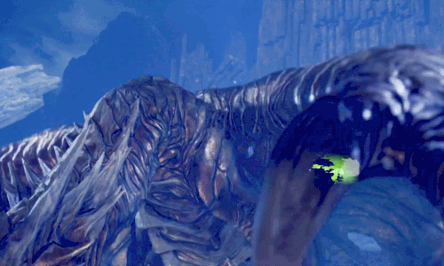
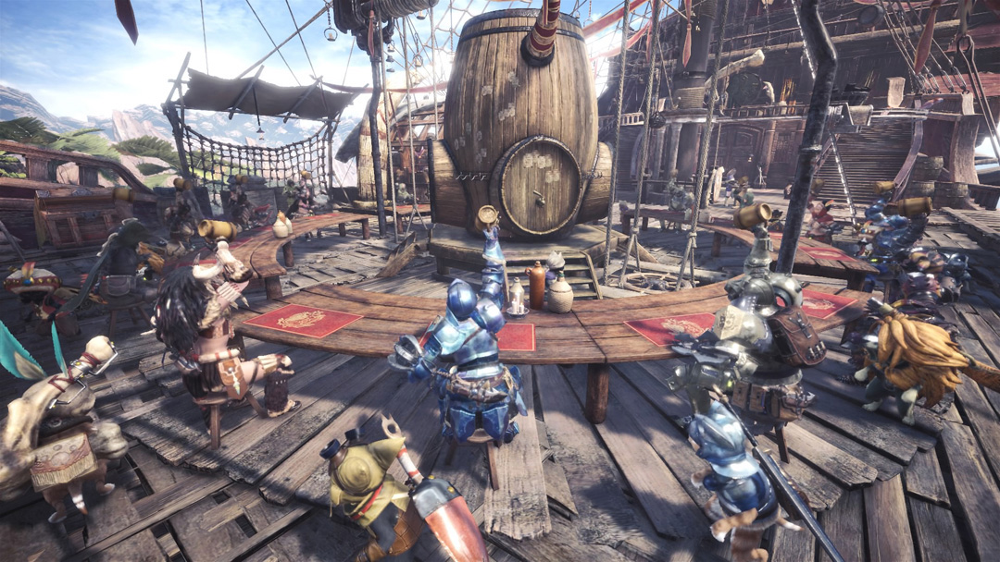
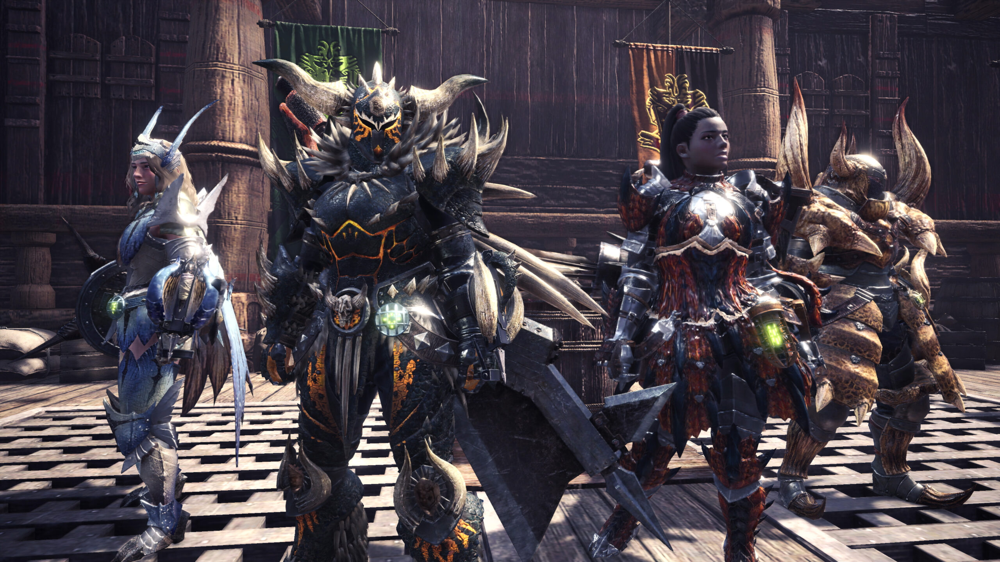
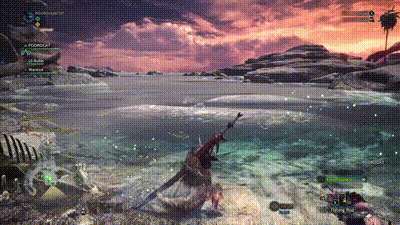
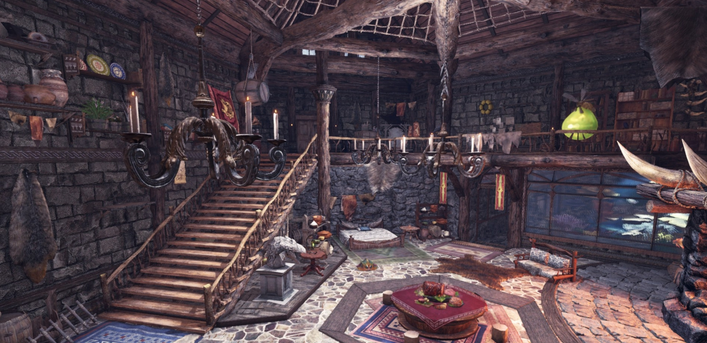
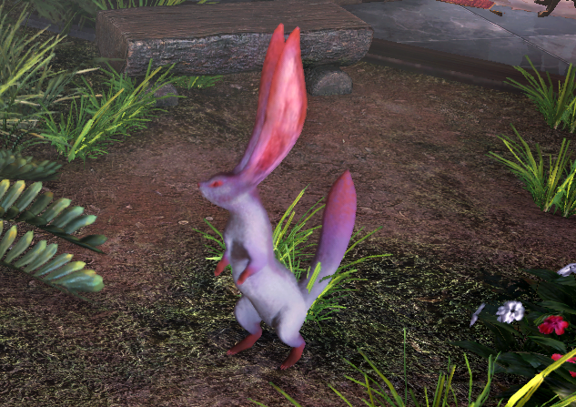

Eslinga

¡Descubre la herramienta de eslinga de Monster Hunter: World y lleva tu caza al siguiente nivel! Con esta herramienta, podrás desplazarte rápidamente por el campo de batalla, acceder a lugares difíciles de alcanzar y, lo más importante, derribar a los monstruos desde ángulos estratégicos. Su versatilidad te permite engancharte a diferentes superficies, lanzar proyectiles y desatar poderosos ataques, ¡todo con un solo clic!
Mantos
Estas poderosas prendas te otorgan habilidades únicas que te ayudarán a sobrevivir en las batallas más intensas. Desde volverte invisible y evitar ataques enemigos, hasta aumentar tu resistencia o potenciar tus capacidades ofensivas, cada manto tiene un efecto estratégico que cambiará el curso de la pelea. Son la clave para adaptarte a cualquier situación, mejorando tu agilidad y protección.
Cabalgatrufos
Esta increíble herramienta te permite montar a los trufos, esos adorables pero poderosos aliados, para que puedas navegar rápidamente por el campo de batalla y explorar nuevos terrenos. No solo son una forma divertida de moverse, sino que también te proporcionan una ventaja táctica, permitiéndote atacar desde una posición elevada y desatar combos devastadores.
Variedad de monstruos
Desde gigantescos dragones elementales hasta criaturas míticas y ferozmente inteligentes, cada monstruo ofrece un desafío único que pondrá a prueba tus habilidades de caza. ¡Prepárate para cazar, aprender y dominar este vasto mundo lleno de criaturas impresionantes!
Juega online
Únete a tus amigos o cazadores de todo el mundo para enfrentar juntos a los monstruos más temibles. La modalidad multijugador permite formar equipos de hasta cuatro jugadores, donde la cooperación y la estrategia son clave para derrotar a gigantescas bestias.
Mejora tu armamento
Personaliza y mejora tus armas y armaduras con materiales que recoges durante tus misiones, creando equipamiento único y poderoso. Cada arma tiene su propio árbol de mejoras, lo que te permite especializarte en diferentes estilos de combate, desde espadas rápidas hasta enormes martillos de impacto.
Pesca
¡Sumérgete en la pesca de Monster Hunter: World y descubre una actividad relajante y estratégica que complementa tu caza! Con una gran variedad de zonas de pesca, puedes capturar peces raros y valiosos que te brindarán ingredientes para recetas, mejoras de objetos y recursos útiles para tus aventuras.
Personaliza tu hogar
Tras cada caza, podrás regresar a tu habitación para decorarla a tu gusto, eligiendo entre una amplia variedad de muebles, adornos y objetos temáticos. Desde camas y alfombras hasta recuerdos de tus grandes victorias, cada detalle refleja tu estilo y logros.
Colecciona mascotas
A lo largo de tus aventuras, podrás encontrar y capturar adorables criaturas que te seguirán y se convertirán en tus fieles compañeros. Desde gatos con habilidades especiales hasta pequeños monstruos de diferentes especies, cada mascota tiene su propio carácter y habilidades que pueden ayudarte durante las misiones.